Trajectory and Pseudotime Analysis
Yichao Hua
2024-07-11
Trajectory.RmdTable of Contents
- scVelo Tutorial for Trajectory Analysis
- Palantir Tutorial for Trajectory and Pseudotime Analysis
- MAGIC for Denoising and Smoothing Gene Expression
- CellRank Tutorial for Trajectory Analysis
- Gene Expression Dynamics Along Differentiation Trajectories
- Slingshot Tutorial for Pseudotime Analysis
- Integration of Seurat with Python Tools
Analyzing Single-Cell Trajectories with scVelo
scVelo is a widely used tool for trajectory analysis
that leverages spliced and unspliced RNA information, as calculated by
Velocyto, to predict the direction of cell differentiation. For more
information, see scVelo’s
documentation. SeuratExtend includes a series of
functions that allow you to easily run everything in R. In this
tutorial, we use an example dataset (pbmc10k_10X)
downloaded from the 10X
Genomics website, focusing on a small subset of myeloid cells for
simplicity.
Downloading Example Data
First, we need to download the example data, including a small Seurat object and a corresponding small loom file generated by Velocyto. These files are stored on Zenodo:
library(Seurat)
library(SeuratExtend)
# Download the example Seurat Object
mye_small <- readRDS(url("https://zenodo.org/records/10944066/files/pbmc10k_mye_small_velocyto.rds", "rb"))
# Download the example velocyto loom file to tmp folder
loom_path <- file.path(tempdir(), "pbmc10k_mye_small.loom")
download.file("https://zenodo.org/records/10944066/files/pbmc10k_mye_small.loom", loom_path)Note: To save disk space, the data downloaded for this tutorial is stored in the temporary folder and will be automatically deleted after the R session is closed. If you wish to permanently retain the tutorial files, please manually change the storage location to your working directory.
Preparing Data for scVelo
scVelo requires an AnnData object from
Python’s Scanpy library for its analyses.
SeuratExtend makes this process seamless by integrating a
Seurat object and a velocyto loom file into a new AnnData
object, serving as a bridge between R and Python.
# Set up the path for saving the AnnData object in the HDF5 (h5ad) format
adata_path <- file.path(tempdir(), "mye_small.h5ad")
# Integrate Seurat Object and velocyto loom information into one AnnData object.
# This object will be stored at the specified path.
scVelo.SeuratToAnndata(
mye_small, # The downloaded example Seurat object
filename = adata_path, # Path where the AnnData object will be saved
velocyto.loompath = loom_path, # Path to the loom file
prefix = "sample1_", # Prefix for cell IDs in the Seurat object
postfix = "-1" # Postfix for cell IDs in the Seurat object
)## Running scvelo 0.3.0 (python 3.10.12) on 2024-07-11 10:13.
## Filtered out 10891 genes that are detected 20 counts (shared).
## Normalized count data: X, spliced, unspliced.
## Extracted 2000 highly variable genes.
## Logarithmized X.
## computing neighbors
## finished (0:00:04) --> added
## 'distances' and 'connectivities', weighted adjacency matrices (adata.obsp)
## computing moments based on connectivities
## finished (0:00:00) --> added
## 'Ms' and 'Mu', moments of un/spliced abundances (adata.layers)
## computing velocities
## finished (0:00:00) --> added
## 'velocity', velocity vectors for each individual cell (adata.layers)
## computing velocity graph (using 1/28 cores)
## WARNING: Unable to create progress bar. Consider installing `tqdm` as `pip install tqdm` and `ipywidgets` as `pip install ipywidgets`,
## or disable the progress bar using `show_progress_bar=False`.
## finished (0:00:01) --> added
## 'velocity_graph', sparse matrix with cosine correlations (adata.uns)Note: If this is your first time running
Python-related functions (scVelo, Palantir,
etc.) in SeuratExtend, it will prompt you to install a
conda environment named “seuratextend”. This environment automatically
installs all required Python packages, supporting Windows, Mac, or Linux
platforms. More details on managing the Anndata object and
Python dependencies are provided here: Integration of
Seurat with Python Tools.
Generating scVelo Plots
Now, you’re ready to generate scVelo plots. The default dimension reduction method is typically UMAP, colored by cluster.
scVelo.Plot(color = "cluster", save = "umap1.png", figsize = c(5,4))
SeuratExtend
supports most commonly used parameters for scVelo plots. You can
customize the plot style, dimensionality reduction method, color
palette, displayed clusters, and more. For more detailed information on
customization and advanced features, refer to the function documentation
or the official
scVelo documentation.
scVelo.Plot(
style = "scatter",
color = "cluster",
groups = c("DC", "Mono CD14"),
palette = color_pro(3, "light"),
xlim = c(0, 5), ylim = c(0, 10),
save = "umap2_specified_area.png",
figsize = c(5,4)
)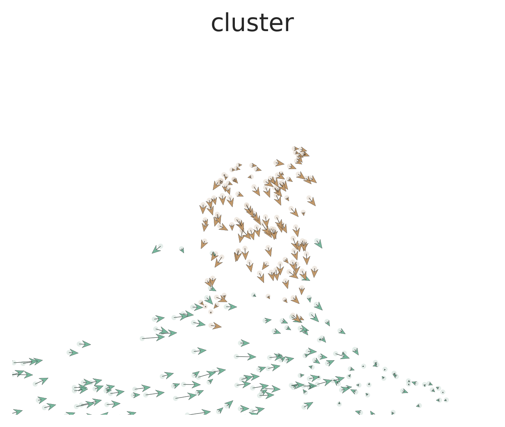
Palantir Tutorial for Trajectory and Pseudotime Analysis
Introduction
Palantir is a
Python tool designed for aligning cells along differentiation
trajectories, determining cell fate, and calculating pseudotime.
SeuratExtend enables these functionalities within R,
storing the results in a Seurat object for streamlined analysis.
Downloading Example Data
We will use a subset of myeloid cells from the
pbmc10k_10X dataset available on the 10X Genomics website. If
you have already loaded the Seurat object, you can skip this step.
Running Diffusion Map
Palantir aligns cells along differentiation trajectories by first
calculating the diffusion map. This is done in Python via
reticulate, based on pre-calculated dimension reductions in
Seurat (e.g., PCA, harmony). The diffusion map (dm) and
multiscale space (ms) embeddings are then added back to the
Seurat object.
mye_small <- Palantir.RunDM(mye_small)## Determing nearest neighbor graph...
# View the new dimensional reductions "dm" and "ms" in the Seurat Object:
mye_small@reductions## $pca
## A dimensional reduction object with key PC_
## Number of dimensions: 50
## Number of cells: 1000
## Projected dimensional reduction calculated: FALSE
## Jackstraw run: FALSE
## Computed using assay: RNA
##
## $umap
## A dimensional reduction object with key UMAP_
## Number of dimensions: 2
## Number of cells: 1000
## Projected dimensional reduction calculated: FALSE
## Jackstraw run: FALSE
## Computed using assay: RNA
##
## $dm
## A dimensional reduction object with key DM_
## Number of dimensions: 50
## Number of cells: 1000
## Projected dimensional reduction calculated: FALSE
## Jackstraw run: FALSE
## Computed using assay: RNA
##
## $ms
## A dimensional reduction object with key MS_
## Number of dimensions: 2
## Number of cells: 1000
## Projected dimensional reduction calculated: FALSE
## Jackstraw run: FALSE
## Computed using assay: RNA
# View the first 2 ms dimensions:
DimPlot2(mye_small, reduction = "ms", group.by = "cluster", label = TRUE)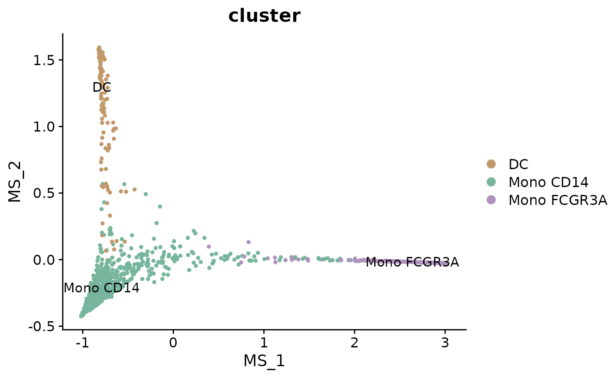
UMAP Based on “ms”
In this simple example, the multiscale space (‘ms’) reduction has only 2 dimensions, which makes additional dimension reduction unnecessary for visualization. However, in more complex datasets, ‘ms’ reductions often yield more dimensions, necessitating further reduction for effective visualization.
For such cases, one can create a new differentiation trajectory space by running UMAP based on the “ms” reduction. This approach allows for a more comprehensible display in a two-dimensional plot, especially when dealing with a higher-dimensional ‘ms’ space. The following code, although not run in this tutorial, illustrates how to implement UMAP on ‘ms’ with hypothetical ten dimensions and visualize the result:
# Assuming 'ms' has 10 dimensions:
# mye_small <- RunUMAP(mye_small, reduction = "ms", dims = 1:10)
# DimPlot2(mye_small, group.by = "cluster", label = TRUE, reduction = "umap")(Optional) Incorporating Newly Calculated Dimension Reductions into AnnData
If you’ve previously followed the scVelo tutorial, an
adata object should already exist in your Python
environment. If you wish to incorporate the dimension reductions
calculated by Palantir (such as ‘ms’) into this adata and
use it for visualization, you can do so with the following commands:
# Add the 'ms' dimension reduction to the existing AnnData object
adata.AddDR(mye_small, dr = "ms", scv.graph = TRUE)
# Generate a plot using the newly added 'ms' dimension reduction
scVelo.Plot(basis = "ms", color = "cluster", save = "umap3_ms.png", figsize = c(5,4))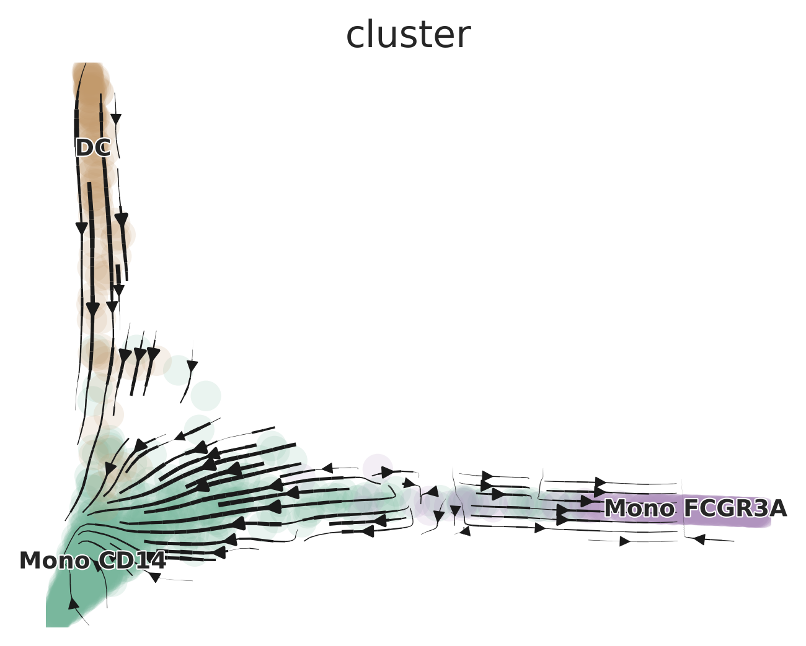
Determining Cell Fates and Calculating Pseudotime
To predict cell fates and calculate pseudotime, You can manually
select “start cells” using the CellSelector function.
p <- DimPlot(mye_small, reduction = "ms", group.by = "cluster")
cells <- CellSelector(p)Then, calculate pseudotime. Results are stored in
SeuratObj@misc$Palantir$Pseudotime.
mye_small <- Palantir.Pseudotime(mye_small, start_cell = "sample1_GAGAGGTAGCAGTACG-1")## Sampling and flocking waypoints...
## Time for determining waypoints: 0.0010946273803710937 minutes
## Determining pseudotime...
## Shortest path distances using 30-nearest neighbor graph...
## Time for shortest paths: 0.10573399464289347 minutes
## Iteratively refining the pseudotime...
## Correlation at iteration 1: 1.0000
## Entropy and branch probabilities...
## Markov chain construction...
## Identification of terminal states...
## Computing fundamental matrix and absorption probabilities...
## Project results to all cells...
ps <- mye_small@misc$Palantir$Pseudotime
head(ps)## Pseudotime Entropy sample1_AAACCCAAGGCCCAAA.1
## sample1_GAGTCATGTACCCGCA-1 0.0369992 0.6087369 0.7024933
## sample1_TGGAGGAGTGTATACC-1 0.1307173 0.6093996 0.7017203
## sample1_CCCGGAAGTTGGCTAT-1 0.1137811 0.6082388 0.7030721
## sample1_CTGAGGCAGTCAGGGT-1 0.2990304 0.4924385 0.8056717
## sample1_GCCAACGTCCCGTGTT-1 0.1455877 0.6137009 0.6966202
## sample1_TCAAGCAGTGTGGTCC-1 0.0759786 0.6087872 0.7024348
## sample1_CCTCTAGGTGAACGGT.1
## sample1_GAGTCATGTACCCGCA-1 0.2975067
## sample1_TGGAGGAGTGTATACC-1 0.2982797
## sample1_CCCGGAAGTTGGCTAT-1 0.2969279
## sample1_CTGAGGCAGTCAGGGT-1 0.1943283
## sample1_GCCAACGTCCCGTGTT-1 0.3033798
## sample1_TCAAGCAGTGTGGTCC-1 0.2975652
# Visualize cell fate on UMAP
colnames(ps)[3:4] <- c("fate1", "fate2")
mye_small@meta.data[,colnames(ps)] <- ps
DimPlot2(mye_small, features = colnames(ps), reduction = "ms",
cols = list(Entropy = "D"))## Loading required package: viridis## Loading required package: viridisLite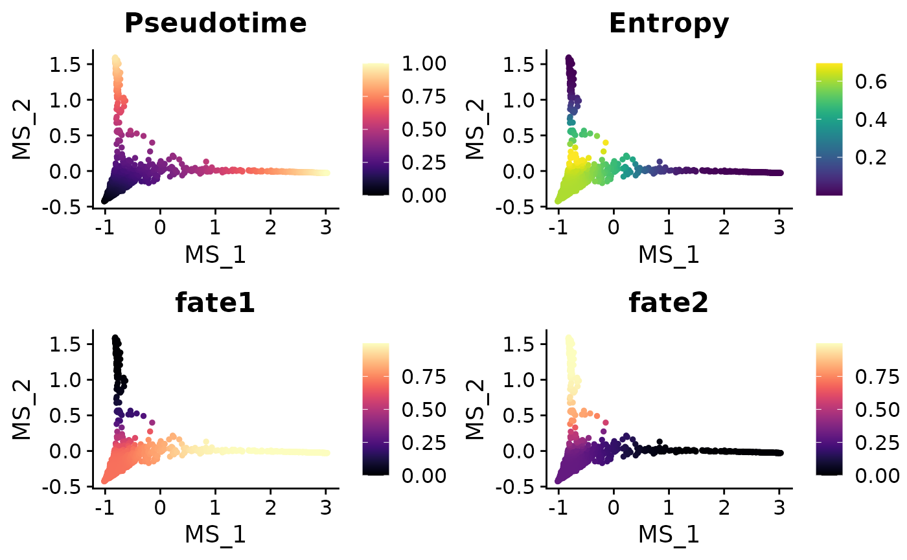
MAGIC for Denoising and Smoothing Gene Expression
Another related tool, MAGIC (Markov Affinity-based Graph Imputation of Cells), denoises and smooths gene expression in scRNA-seq data. Here’s how to run it and observe the differences in gene expression:
mye_small <- Palantir.Magic(mye_small)## Determing nearest neighbor graph...## Warning: Layer counts isn't present in the assay object; returning NULL
# Creates a new assay "magic" in the Seurat object
mye_small <- NormalizeData(mye_small)
DimPlot2(mye_small, features = c("CD14", "magic_CD14", "FLT3", "magic_FLT3"))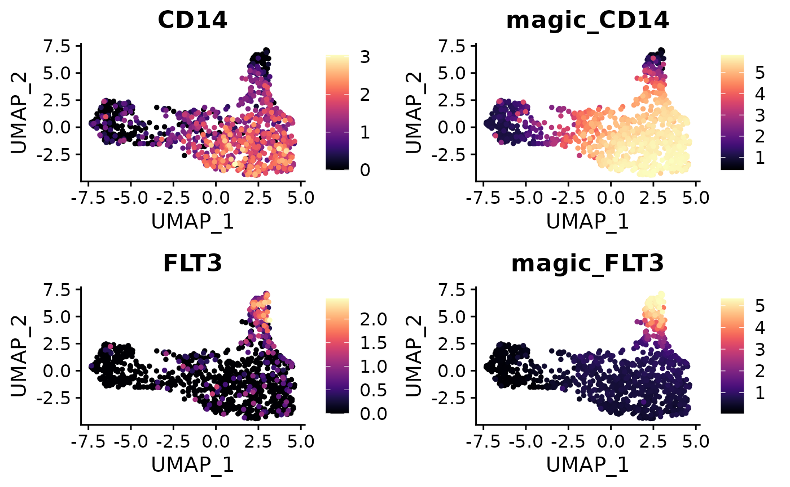
CellRank Tutorial for Trajectory Analysis
Introduction
While scVelo is a powerful tool for predicting differentiation potential, it may sometimes produce arrows pointing opposite the known differentiation trajectory, which is inconsistent with biological knowledge. For more details and examples, visit the CellRank documentation. In such cases, CellRank offers an alternative by utilizing pre-calculated pseudotime to create trajectory plots. However, it’s crucial to ensure that the pseudotime calculation aligns with validated biological knowledge to avoid misuse of the algorithm.
This tutorial assumes you have already completed the tutorials for velocyto and Palantir. We will use CellRank to build trajectory plots, continuing from where those tutorials left off.
Adding Pseudotime to the adata Object
First, we add the Pseudotime calculated by Palantir to the
adata object. This information is saved in the
meta.data of the Seurat Object. We transfer the relevant
column from Seurat to adata:
adata.AddMetadata(mye_small, col = colnames(ps))Running CellRank Kernel
Next, we run the CellRank Kernel to compute the trajectory plots using the previously added Pseudotime information.
Cellrank.Compute(time_key = "Pseudotime")Generating the Plots
The process for generating plots with CellRank is similar to that
used with scVelo.Plot:
# Generate a plot using the 'ms' dimension reduction
Cellrank.Plot(color = "cluster", basis = "ms", save = "umap3_ms_cellrank.png")
Gene Expression Dynamics Along Differentiation Trajectories]
Visualizing smoothed gene expression along a trajectory offers
insightful perspectives on cellular differentiation and development.
SeuratExtend introduces two methods for such visualization,
leveraging the pseudotime calculated by tools like
Palantir.
Gene Trend Curves with Palantir
Assuming you have already executed Palantir.Pseudotime
as shown in a previous tutorial, you can create gene trend curves as
follows:
library(SeuratExtend)
# Basic gene trend curve visualization
GeneTrendCurve.Palantir(mye_small, features = c("CD14", "FCGR3A"))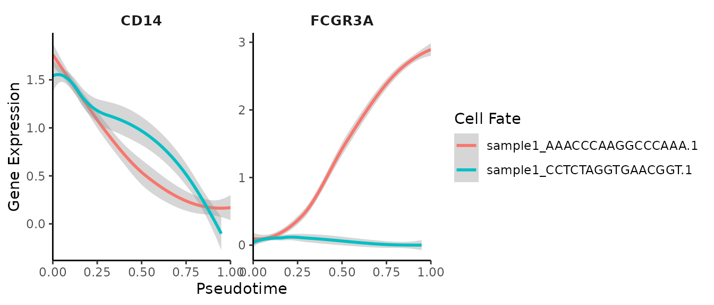
Customizing Gene Trend Curves
You can customize the plots, for instance, by adding points, removing confidence intervals, and renaming cell fates:
# Accessing pseudotime and adjusting fate names
ps <- mye_small@misc$Palantir$Pseudotime
head(ps)## Pseudotime Entropy sample1_AAACCCAAGGCCCAAA.1
## sample1_GAGTCATGTACCCGCA-1 0.0369992 0.6087369 0.7024933
## sample1_TGGAGGAGTGTATACC-1 0.1307173 0.6093996 0.7017203
## sample1_CCCGGAAGTTGGCTAT-1 0.1137811 0.6082388 0.7030721
## sample1_CTGAGGCAGTCAGGGT-1 0.2990304 0.4924385 0.8056717
## sample1_GCCAACGTCCCGTGTT-1 0.1455877 0.6137009 0.6966202
## sample1_TCAAGCAGTGTGGTCC-1 0.0759786 0.6087872 0.7024348
## sample1_CCTCTAGGTGAACGGT.1
## sample1_GAGTCATGTACCCGCA-1 0.2975067
## sample1_TGGAGGAGTGTATACC-1 0.2982797
## sample1_CCCGGAAGTTGGCTAT-1 0.2969279
## sample1_CTGAGGCAGTCAGGGT-1 0.1943283
## sample1_GCCAACGTCCCGTGTT-1 0.3033798
## sample1_TCAAGCAGTGTGGTCC-1 0.2975652
colnames(ps)[3:4] <- c("fate1", "fate2")
# Customized gene trend curve visualization
GeneTrendCurve.Palantir(
mye_small,
pseudotime.data = ps,
features = c("CD14", "FCGR3A"),
point = TRUE,
se = FALSE
)## `geom_smooth()` using method = 'loess' and formula = 'y ~ x'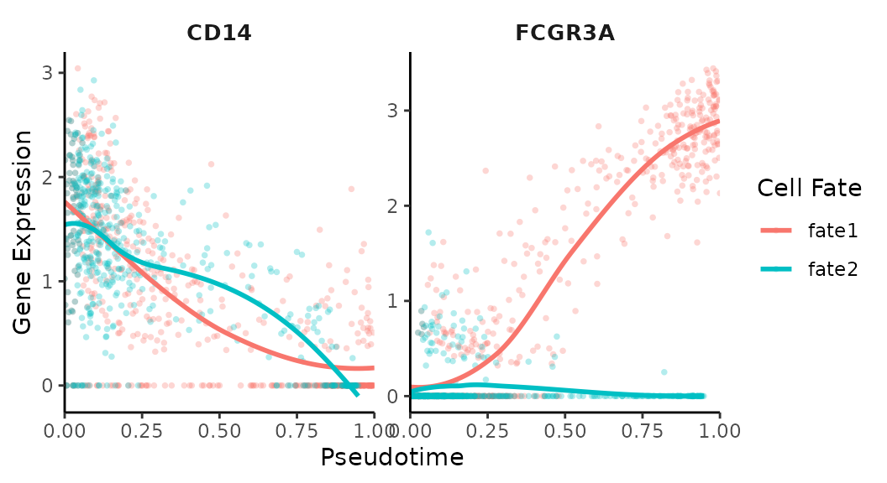
Gene Trend Heatmaps with Palantir
Another powerful method for visualizing gene expression dynamics is through heatmaps, which can illustrate how gene expression changes across pseudotime and for specific lineages:
# Creating a gene trend heatmap
GeneTrendHeatmap.Palantir(
mye_small,
features = c("CD14", VariableFeatures(mye_small)[1:10]),
pseudotime.data = ps,
magic = FALSE,
lineage = "fate1"
)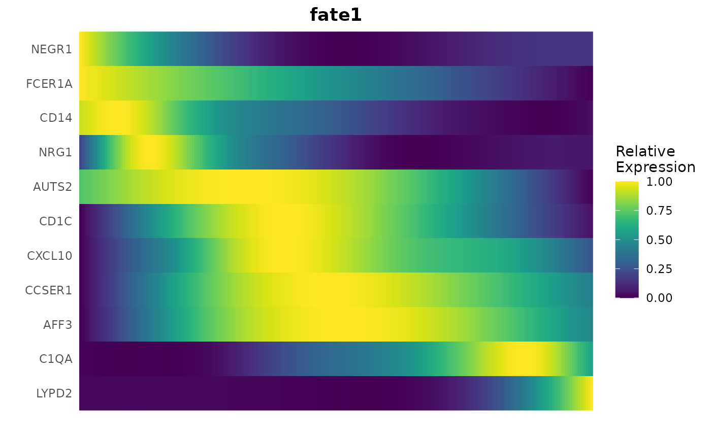
Slingshot Tutorial for Pseudotime Analysis
Apart from Palantir, Slingshot is another valuable tool
for calculating pseudotime, particularly useful for mapping cellular
trajectories in single-cell RNA sequencing data.
Running Slingshot
To calculate pseudotime using Slingshot, we start by integrating it with our Seurat object:
library(SeuratExtend)
mye_small <- RunSlingshot(mye_small, group.by = "cluster", start.clus = "Mono CD14")Accessing Slingshot Output
The Slingshot output is stored within the Seurat object. Let’s extract the pseudotime values and visualize them on the UMAP:
sling <- mye_small@misc$slingshot$PCA$SlingPseudotime
head(sling)## DataFrame with 6 rows and 2 columns
## slingPseudotime_1 slingPseudotime_2
## <numeric> <numeric>
## sample1_GAGTCATGTACCCGCA-1 12.3665 12.3423
## sample1_TGGAGGAGTGTATACC-1 20.2568 20.3749
## sample1_CCCGGAAGTTGGCTAT-1 19.6071 19.7093
## sample1_CTGAGGCAGTCAGGGT-1 26.1367 28.3753
## sample1_GCCAACGTCCCGTGTT-1 17.0883 17.5357
## sample1_TCAAGCAGTGTGGTCC-1 16.5014 16.4016
mye_small@meta.data[,colnames(sling)] <- as.data.frame(sling)
DimPlot2(mye_small, features = colnames(sling), cols = "C")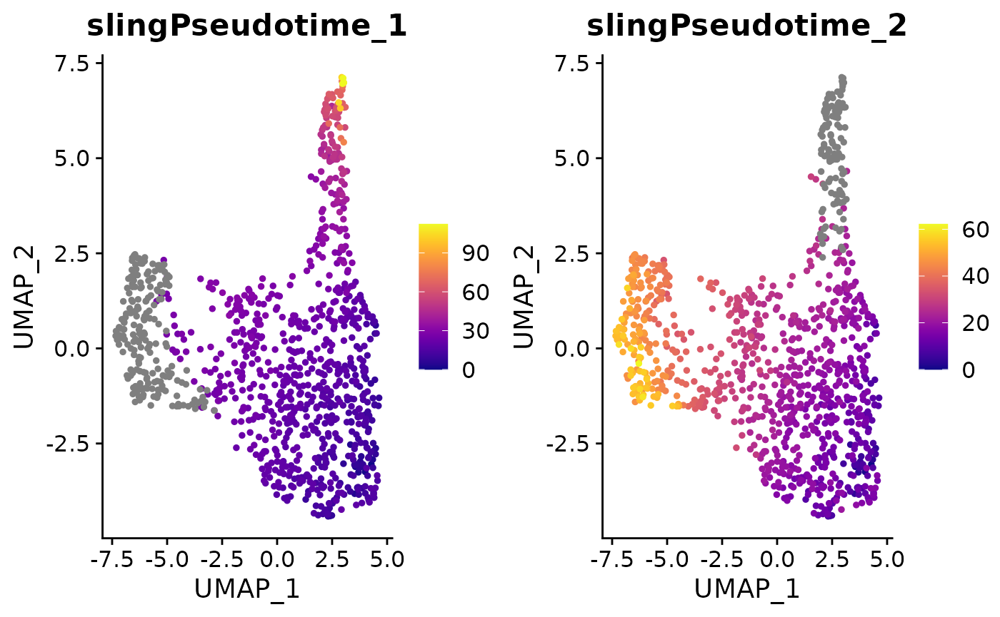
Gene Trend Curves for Slingshot Pseudotime
Similar to Palantir, Slingshot pseudotime allows for the creation of gene trend curves, illustrating the dynamics of gene expression along the computed trajectories:
GeneTrendCurve.Slingshot(mye_small, features = c("CD14", "FCGR3A"))## `geom_smooth()` using method = 'loess' and formula = 'y ~ x'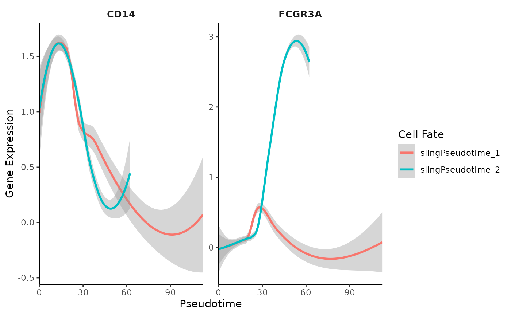
Visualizing Gene Trends with Heatmaps
Additionally, Slingshot pseudotime can be used to generate heatmaps, showcasing the progression of gene expression across different lineages:
GeneTrendHeatmap.Slingshot(
mye_small,
features = c("CD14", VariableFeatures(mye_small)[1:10]),
lineage = "slingPseudotime_2"
)## Using id as id variables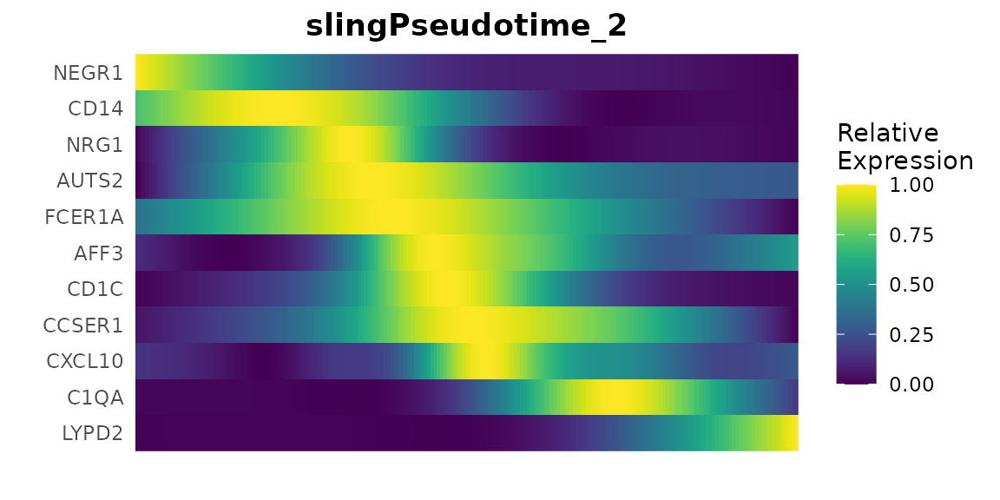
Integration of Seurat with Python Tools
Introduction
SeuratExtend incorporates numerous functions that
utilize Python packages such as Scanpy,
scVelo, Palantir, and CellRank.
This integration facilitates a seamless workflow between
Seurat objects and AnnData formats, crucial
for leveraging the comprehensive analytical capabilities of both R and
Python ecosystems.
To understand the mechanisms behind these functions, it is important
to grasp the fundamentals of how Seurat and
AnnData communicate. Initially, loom files
serve as the intermediary; these h5 format files are widely used for
storing scRNA-seq data and are compatible with both R and Python. Tools
such as velocyto and SCENIC utilize loom
files, which can store gene expression and metadata but have
limitations, such as the inability to store dimensional reduction and
neighborhood graph information.
In SeuratExtend, the conversion from a
Seurat object to an AnnData object does not
occur directly. Instead, loom files act as a bridge—first
converting Seurat to loom and then from
loom to AnnData. The loss of dimensional
reduction information during this process is compensated by other
related functions within SeuratExtend.
Creating a Conda Environment with All Required Python Packages
If it is your first time running functions related to
scVelo, Palantir, or CellRank,
you will be automatically prompted to install a Conda environment named
“seuratextend”. This environment includes all the Python packages
required by SeuratExtend and is managed through
reticulate. If you prefer to initiate this installation
step manually, you can easily do so by running:
This function automatically detects your operating system and sets up the environment accordingly. It is currently supported and tested on Windows, macOS, and Linux (Ubuntu 20.04) systems.
Integrating Seurat with AnnData
In this section, we demonstrate the utility of functions designed to
bridge Seurat objects with Python’s AnnData
structures, using a small pbmc Seurat object as an example.
The process covers conversion to a loom file, importing
into AnnData, and appending additional metadata and
dimension reduction data.
Converting Seurat Object to Loom
First, we convert a Seurat object to a loom
file which can then be used to create an AnnData
object:
Importing Loom File into AnnData
Next, we import the loom file into an
AnnData object, which is handled by Python:
# Load the loom file into an AnnData object
adata.LoadLoom(loompath = pbmc_loom_path)Viewing AnnData Object
To view the newly created AnnData object, we use
reticulate to execute Python code:
# Print the AnnData object details
py_run_string("print(adata)")## AnnData object with n_obs × n_vars = 500 × 12627
## obs: 'RNA_snn_res.0.5', 'cluster', 'nCount_RNA', 'nFeature_RNA', 'orig.ident', 'percent.mt', 'seurat_clusters'
## layers: 'counts'Adding Dimension Reduction Data
AnnData objects can store more than just gene expression
and metadata; here we add dimension reduction data from
Seurat:
# Add dimension reduction data from Seurat to AnnData
adata.AddDR(pbmc)
# Print the updated AnnData object
py_run_string("print(adata)")## AnnData object with n_obs × n_vars = 500 × 12627
## obs: 'RNA_snn_res.0.5', 'cluster', 'nCount_RNA', 'nFeature_RNA', 'orig.ident', 'percent.mt', 'seurat_clusters'
## obsm: 'X_pca', 'X_umap'
## layers: 'counts'Direct Conversion from Seurat to AnnData
For a streamlined conversion that includes the steps of
Seu2Loom(), adata.LoadLoom() and
adata.AddDR(), you can use a single function:
# Directly convert Seurat object to AnnData object
Seu2Adata(pbmc)Updating AnnData with New Metadata
If new metadata columns are added to the Seurat object,
they can also be incorporated into the AnnData object:
# Add new metadata column to AnnData
pbmc$cluster2 <- pbmc$cluster
adata.AddMetadata(pbmc, col = "cluster2")
# Print the updated AnnData object
py_run_string("print(adata)")## AnnData object with n_obs × n_vars = 500 × 12627
## obs: 'RNA_snn_res.0.5', 'cluster', 'nCount_RNA', 'nFeature_RNA', 'orig.ident', 'percent.mt', 'seurat_clusters', 'cluster2'
## obsm: 'X_pca', 'X_umap'
## layers: 'counts'Saving and Loading AnnData
You can save the AnnData object to a local file for
future use:
# Save the AnnData object to a local file
pbmc_adata_path <- file.path(tempdir(), "pbmc3k_small.h5ad")
adata.Save(pbmc_adata_path)And load it back when needed:
# Load an existing AnnData object from file
adata.Load(pbmc_adata_path)If you have completed the scVelo tutorial and saved the results, you
can load the AnnData object and directly generate
plots:
# Load the scVelo tutorial results and generate a plot
adata.Load(adata_path)
scVelo.Plot(color = "cluster", figsize = c(5,4), save = "umap4_load_adata.png")
## R version 4.4.0 (2024-04-24)
## Platform: x86_64-pc-linux-gnu
## Running under: Ubuntu 20.04.6 LTS
##
## Matrix products: default
## BLAS: /usr/lib/x86_64-linux-gnu/blas/libblas.so.3.9.0
## LAPACK: /usr/lib/x86_64-linux-gnu/lapack/liblapack.so.3.9.0
##
## locale:
## [1] LC_CTYPE=en_US.UTF-8 LC_NUMERIC=C
## [3] LC_TIME=de_BE.UTF-8 LC_COLLATE=en_US.UTF-8
## [5] LC_MONETARY=de_BE.UTF-8 LC_MESSAGES=en_US.UTF-8
## [7] LC_PAPER=de_BE.UTF-8 LC_NAME=C
## [9] LC_ADDRESS=C LC_TELEPHONE=C
## [11] LC_MEASUREMENT=de_BE.UTF-8 LC_IDENTIFICATION=C
##
## time zone: Europe/Brussels
## tzcode source: system (glibc)
##
## attached base packages:
## [1] stats4 tools stats graphics grDevices utils datasets
## [8] methods base
##
## other attached packages:
## [1] slingshot_2.12.0 TrajectoryUtils_1.12.0
## [3] SingleCellExperiment_1.26.0 SummarizedExperiment_1.34.0
## [5] Biobase_2.64.0 GenomicRanges_1.56.0
## [7] GenomeInfoDb_1.40.1 IRanges_2.38.0
## [9] S4Vectors_0.42.0 BiocGenerics_0.50.0
## [11] MatrixGenerics_1.16.0 matrixStats_1.3.0
## [13] princurve_2.1.6 rlang_1.1.4
## [15] scales_1.3.0 dplyr_1.1.4
## [17] mgcv_1.9-1 nlme_3.1-165
## [19] reshape2_1.4.4 viridis_0.6.5
## [21] viridisLite_0.4.2 cowplot_1.1.3
## [23] ggplot2_3.5.1 reticulate_1.37.0
## [25] glue_1.7.0 hdf5r_1.3.10
## [27] SeuratExtend_1.0.0 SeuratExtendData_0.2.0
## [29] Seurat_5.1.0 SeuratObject_5.0.2
## [31] sp_2.1-4
##
## loaded via a namespace (and not attached):
## [1] RcppAnnoy_0.0.22 splines_4.4.0
## [3] later_1.3.2 tibble_3.2.1
## [5] polyclip_1.10-6 fastDummies_1.7.3
## [7] lifecycle_1.0.4 globals_0.16.3
## [9] lattice_0.22-6 MASS_7.3-60.2
## [11] magrittr_2.0.3 plotly_4.10.4
## [13] sass_0.4.9 rmarkdown_2.27
## [15] jquerylib_0.1.4 yaml_2.3.8
## [17] rlist_0.4.6.2 httpuv_1.6.15
## [19] sctransform_0.4.1 spam_2.10-0
## [21] spatstat.sparse_3.0-3 pbapply_1.7-2
## [23] RColorBrewer_1.1-3 abind_1.4-5
## [25] zlibbioc_1.50.0 Rtsne_0.17
## [27] purrr_1.0.2 rappdirs_0.3.3
## [29] GenomeInfoDbData_1.2.12 ggrepel_0.9.5
## [31] irlba_2.3.5.1 listenv_0.9.1
## [33] spatstat.utils_3.0-4 goftest_1.2-3
## [35] RSpectra_0.16-1 spatstat.random_3.2-3
## [37] fitdistrplus_1.1-11 parallelly_1.37.1
## [39] DelayedMatrixStats_1.26.0 pkgdown_2.0.9
## [41] leiden_0.4.3.1 codetools_0.2-20
## [43] DelayedArray_0.30.1 tidyselect_1.2.1
## [45] UCSC.utils_1.0.0 farver_2.1.2
## [47] spatstat.explore_3.2-7 jsonlite_1.8.8
## [49] progressr_0.14.0 ggridges_0.5.6
## [51] survival_3.7-0 systemfonts_1.1.0
## [53] ragg_1.3.2 ica_1.0-3
## [55] Rcpp_1.0.12 gridExtra_2.3
## [57] SparseArray_1.4.8 xfun_0.44
## [59] withr_3.0.0 fastmap_1.2.0
## [61] fansi_1.0.6 digest_0.6.35
## [63] R6_2.5.1 mime_0.12
## [65] textshaping_0.4.0 colorspace_2.1-0
## [67] scattermore_1.2 tensor_1.5
## [69] spatstat.data_3.0-4 utf8_1.2.4
## [71] tidyr_1.3.1 generics_0.1.3
## [73] data.table_1.15.4 httr_1.4.7
## [75] htmlwidgets_1.6.4 S4Arrays_1.4.1
## [77] uwot_0.2.2 pkgconfig_2.0.3
## [79] gtable_0.3.5 lmtest_0.9-40
## [81] XVector_0.44.0 htmltools_0.5.8.1
## [83] dotCall64_1.1-1 png_0.1-8
## [85] knitr_1.47 rstudioapi_0.16.0
## [87] cachem_1.1.0 zoo_1.8-12
## [89] stringr_1.5.1 KernSmooth_2.23-24
## [91] parallel_4.4.0 miniUI_0.1.1.1
## [93] desc_1.4.3 pillar_1.9.0
## [95] grid_4.4.0 vctrs_0.6.5
## [97] RANN_2.6.1 promises_1.3.0
## [99] xtable_1.8-4 cluster_2.1.6
## [101] evaluate_0.23 cli_3.6.2
## [103] compiler_4.4.0 crayon_1.5.2
## [105] future.apply_1.11.2 labeling_0.4.3
## [107] plyr_1.8.9 fs_1.6.4
## [109] stringi_1.8.4 deldir_2.0-4
## [111] munsell_0.5.1 lazyeval_0.2.2
## [113] spatstat.geom_3.2-9 Matrix_1.7-0
## [115] RcppHNSW_0.6.0 patchwork_1.2.0
## [117] sparseMatrixStats_1.16.0 bit64_4.0.5
## [119] future_1.33.2 shiny_1.8.1.1
## [121] highr_0.11 ROCR_1.0-11
## [123] igraph_1.3.4 memoise_2.0.1
## [125] bslib_0.7.0 bit_4.0.5